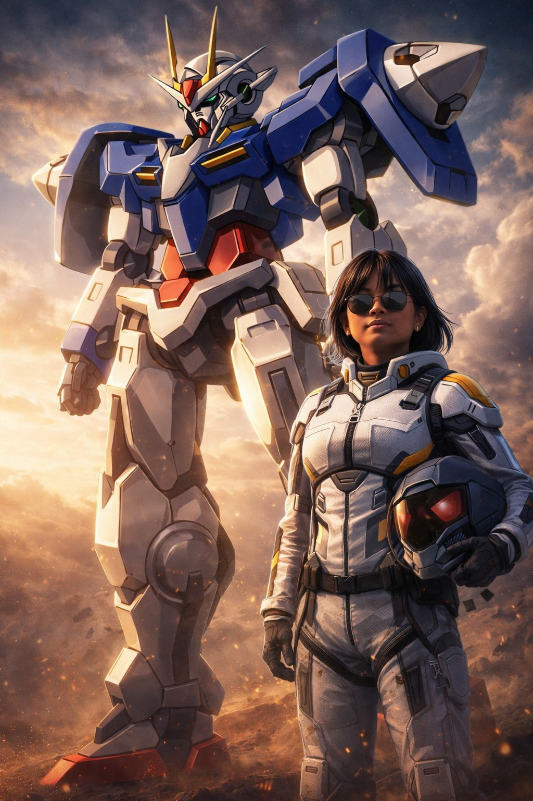

Gillian Alindayu
Professional front-end developer, graphic designer, and UX design.

About Me
Hi, I'm Gillian Alindayu, a passionate front-end developer with a knack for creating visually stunning and user-friendly websites. With a background in graphic design and UX design, I bring a unique blend of creativity and technical expertise to every project I work on. I specialize in HTML, CSS, JavaScript, and various front-end frameworks. My goal is to craft seamless digital experiences that not only look great but also function flawlessly. I also have experience in graphic design, which allows me to create compelling visuals and interfaces that enhance user engagement. Whether it's designing a sleek website or developing an intuitive user interface, I am dedicated to delivering high-quality work that exceeds client expectations. Let's connect and create something amazing together. As well as entertainment, I also have a passive for learning new things, especially I am eager making such stories from the artwork I have created.
Projects
Project One
Brief description of project one.
Project Two
Brief description of project two.